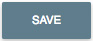
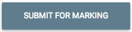

Technical Instructions to Submit a Reflection
Review the Passport activity cards and consider which four activities you would like to complete by weeks 3, 6, 9, and 12 of the course. Which activities or events do you find the most interesting or challenging? For each activity you complete, submit a reflection that answers the three reflection questions posted at the top of the GCM2000 Activity Passport.
Read the reflection questions prior to participating in an activity so you know what the kind of information you will be expected to share in your reflection.
Click on each title and follow these steps on the GCM Passport Activity Topic page to submit a reflections after you have completed an activity.
To enter your reflection, click the edit reflection icon next to the activity name. The My Reflection panel is displayed
To respond to a reflection question, click below the reflection question and type your response.
Repeat this instruction step for each question. See the Sample Reflection for an example of a completed reflection.
To save your work, click the Save button at the bottom of the screen to return to the GCM2000 Activity Passport page.
This saves your work as a draft. It is not submitted to the instructor for grading. If you want to go back and edit your work, click the e reflection icon next to the activity name.
To submit your reflection for grading, click the Submit for Marking button at the bottom of the activity card. Your reflection is now submitted for grading.